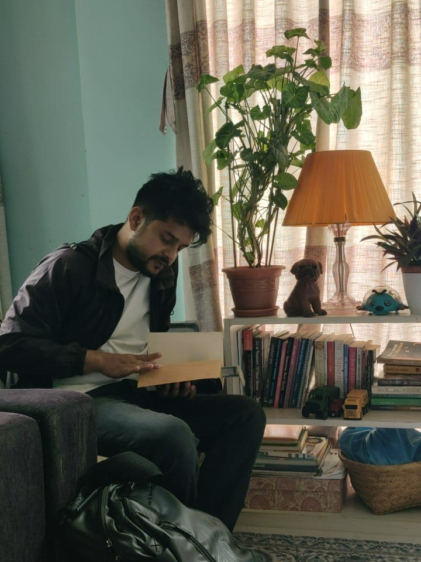
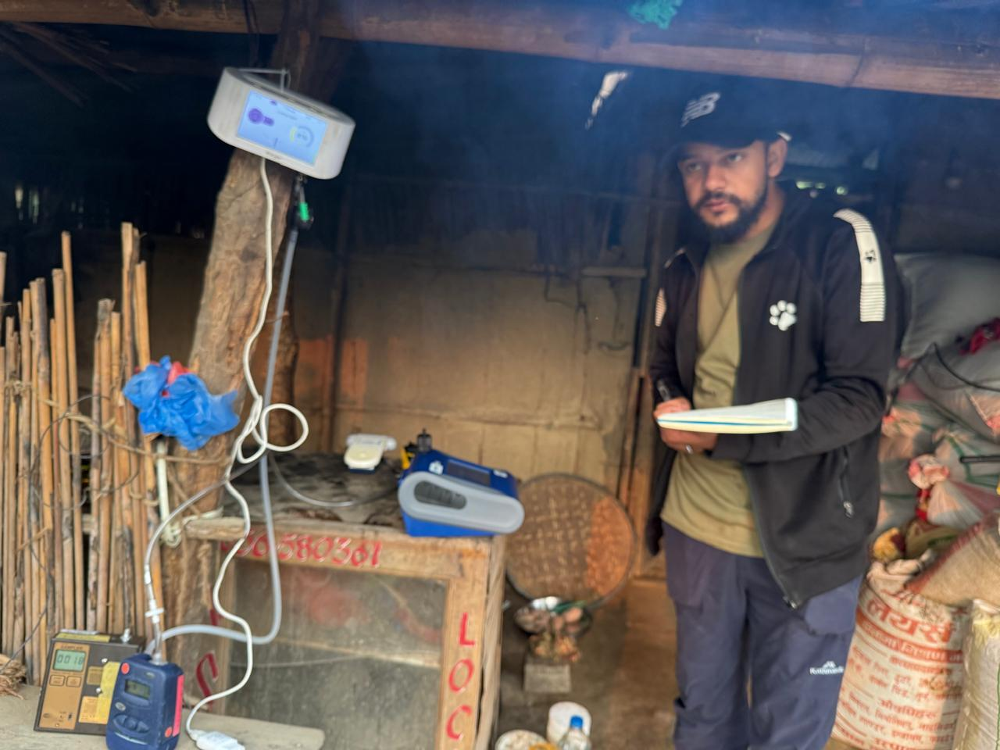
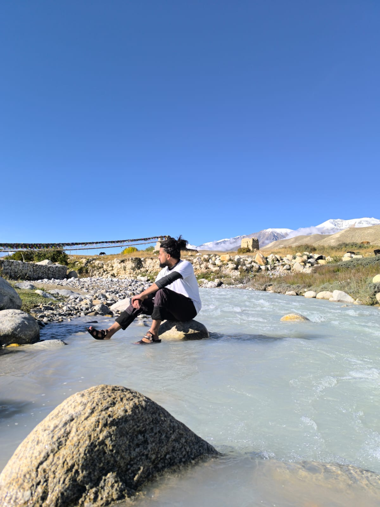
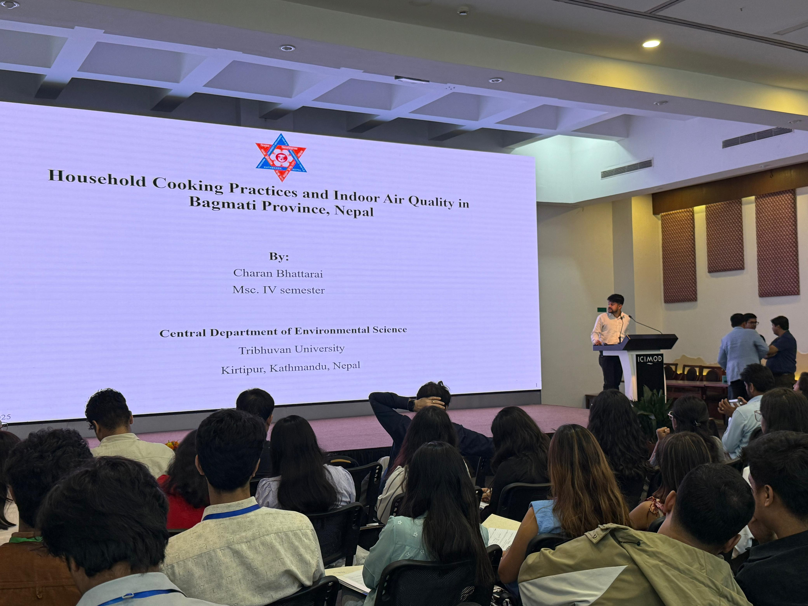
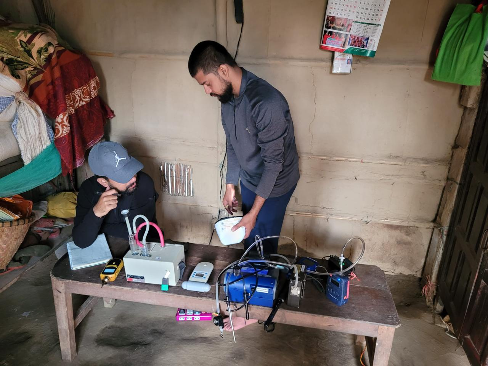

Charan Bhattarai
Environmental Scientist & Researcher
Motivated Environmental Science graduate with expertise in air quality assessment, water resources management, and climate change adaptation. Committed to translating scientific findings into actionable environmental policy solutions.
Professional Summary
Skilled in environmental data collection, GIS and spatial analysis, R/Python programming, and scientific writing. Demonstrated expertise in low-cost sensor deployment, hydrochemical analysis, and community-based research. Strong academic credentials with multiple grants and awards including KCRE-CAS Excellent Student Grant and University of Eastern Finland Thesis Grant.
Education
Master of Science in Environmental Science
Central Department of Environmental Science
Tribhuvan University, Kathmandu, Nepal
Thesis: Impact of Household Cooking Practices on Indoor Air Quality in Bagmati Province, Nepal
Awards: KCRE-CAS Excellent Student Grant (TU); University of Eastern Finland Thesis Grant
Bachelor of Science in Environmental Science
Mechi Multiple Campus
Tribhuvan University, Bhadrapur, Jhapa, Nepal
Thesis: Composition of Invasive Alien Plant Species in Irautar Community Forest, Illam
Research Experience
Smoke-Free Homes Nepal
Research Assistant conducting field data collection on indoor air pollution from biomass burning. Deploy low-cost sensors and mid-volume samplers; coordinate laboratory analysis of particulate matter.
Phoksundo Lake Study
Hydrochemistry researcher assessing water quality of high-altitude Ramsar site in Dolpa. Performed statistical data analysis and co-authored peer-reviewed manuscript.
World Bank Emission Inventory
Field researcher for Kathmandu Valley emission assessment. Installed and maintained PM2.5 low-cost sensor network; performed quality assurance on real-time data.
Loss and Damage Finance Assessment
Research surveyor for locally-led assessment of Loss and Damage: Case of Melamchi Flood 2021. Assisted in data collection with KoboCollect and technical report writing.
Solid Waste Characterization
Field researcher for solid waste generation and composition study in Birtamode Municipality. Executed household surveys and field measurements for municipal waste audit.
Secondary Level Teacher
Science teacher at Anshu Academy delivering science curriculum and mentoring students in environmental science.
Publications
Hydrochemistry and Water Quality of Phoksundo Lake (Dolpa): Insights from the Higher Himalaya Ramsar Site of Nepal
Perception of Climate Change of Secondary Level Students in Mechinagar, Jhapa, Nepal
Evaluation of Water Quality in Lowland Ramsar Wetlands: Insights on Hydrochemistry Analysis-Sustainable Development Goals Nexus
Certifications & Training
IBM SkillsBuild
AI Literacy, Project Management Fundamentals, Introduction to AI
Google Cloud
Introduction to Generative AI
Esri Training
GIS Basics, Getting Started with Spatial Analysis
HP LIFE Foundation
Circular Economy, AI for Beginners, Data Science & Analytics
Safety Certifications
COSHH Awareness, Asbestos Awareness
Elsevier Scopus Academy
Metrics, GenAI Literacy Program
Fieldwork & Conferences




Get In Touch
Interested in collaborating on environmental research or have questions about my work? Feel free to reach out!
Send Email